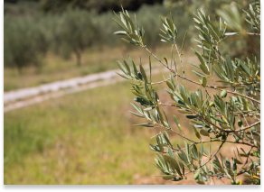

OLIVES

L’OLIVE FRUIT DE L’OLIVIER
On dénombre plus d'une centaine de variétés d'olives, mais en France on n'en cultive guère q'une
quinzaine (rationalisation, coûts).
Le choix de la variété dépendra de la destination finale du fruit, olives de table ou huile d'olive ou
les deux..
Récoltées avec un soin tout particulier, les olives destinées à la table sont contrairement à celles destinées à l'huile pratiquement récoltées une à une. L'appellation olive de table (AOC olives de Nice) implique une certaine grosseur du fruit. Outre le calibre qui se mesure au nombre d'olive aux 100 grammes il y a le contenu en sucre, en huile et la consistance de la pulpe.
L'olivier d'ornement :
L'Aglandaou (Verdale de Carpentras) L'Aglandau
Elle est cultivée dans les Alpes-de-Hautes-Provence (04), les Bouches-du-Rhône (13), dans le Vaucluse
(84) et dans le Var. Très bonne résistance au froid. Pollinisateur, Cayon et Picholine.
La Picholine Picholline dia Gard
C'est la variété la plus répandue en France, on la trouve dans tout le sud. On la récolte en vert aussi
bien en olive de table que pour en faire de l'huile. Résistance au froid moyen. Rendement huile moyen.
La Lucques La Lucques
Elle est originaire de France et se cultive dans l'Hérault. Elle est récoltée en vert et surtout utilisée pour la conserve.
La Grossanne
La Grossanne
Elle est localisée dans la vallée des Baux-de-Provence, elle est rustique et résiste au froid. Elle
bénéficie de l'A.O.C.
LA TANCHE :
Elle est très recherchée, elle est très généreuse en huile et utilisée en confiserie. Elle a bénéficié de
la première A.O.C. en 1995. On la trouve surtout dans le sud de la Drôme (26) dans les vallées de
l'Ouvèze autour de Buis-les-Baronnies et de l'Eygues autour de Nyons, ainsi que dans quelques oliveraies
dans le Nord du Vaucluse (Olive noire de Nyons).
Plats de viandes ou de volailles
Le Caillette (cailletier):
Elle est typique des Alpes-Maritimes (06). On la récolte en noire, c'est » l'olive noire de Nice « A.O.C.
2001 Décret du 20 avril 2001 relatif à l'appellation d'origine contrôlée « Olive de Nice » J.O. du
27/04/2001.
La Salonenque La salonnenqu
Elle est originaire de Salon-de-Provence, on ne la trouve que dans les Bouches-du-Rhône (13). Elle est
principalement destinée à la préparation des olives cassées mais aussi pour produire de l'huile.
Les olives à huile :
La bouteillan :
La Bouteillan est surtout cultivée dans le Var, elle a une bonne résistance au froid, un bon rendement en
huile, ses pollinisateurs sont :
Cayon, Grossanne et Verdale de l'Herault.
La Négrette et le Vermillon sont cultivées dans le Var (83).
L'Olivière est cultivée dans l'Aude (11), l'Hérault (34), elle a une forte résistance au froid.
L'Amillau, La Corniale, La Redonale et La Verdale sont cultivées dans l'Hérault (34).
Le Poumal ou la Ouanne sont cultivées dans les Pyrénées-Orientales (66).
Tableau détaillé de certaines des variétés ici.

OLIVIER

OLIVES

TOURISME

LIVRES A LIRE